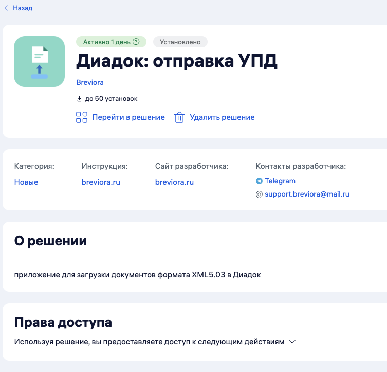
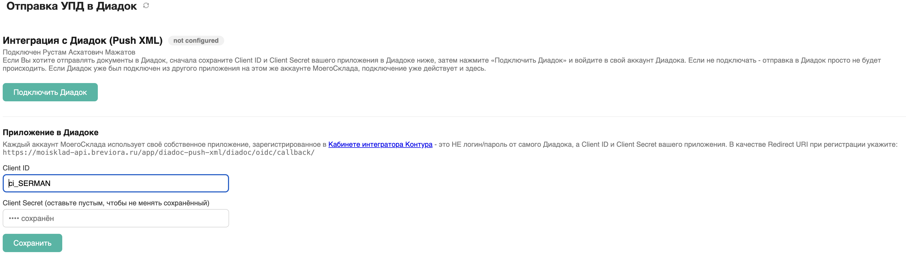
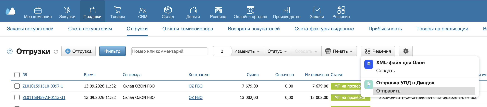
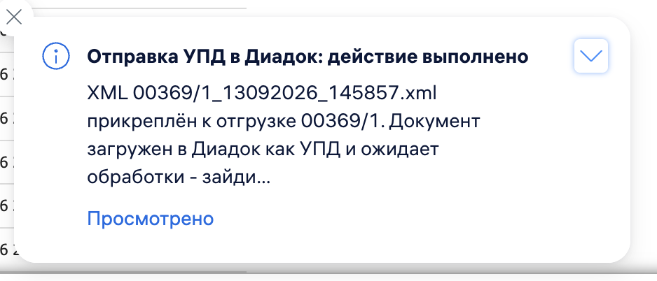

Диадок: отправка УПД
Кнопка на Отгрузке формирует стандартный УПД из документа МойСклад и отправляет его в Контур.Диадок как черновик на подпись.
1 Установите решение
Откройте раздел «Решения» в МойСклад, найдите «Диадок: отправка УПД» и нажмите «Установить».

2 Подключите Диадок
Откройте настройки решения и нажмите «Подключить Диадок», затем авторизуйтесь в своём аккаунте Контур.Диадок. Без этого шага XML прикрепляется в МойСклад, но не уходит в Диадок.

3 Нажмите кнопку на Отгрузке
Перейдите в раздел «Продажи → Отгрузки», выберите нужную отгрузку и нажмите «Решения» → «Отправить». Решение сформирует УПД, прикрепит его к документу и отправит в Диадок.

4 Готово
Появится уведомление об отправке. В Диадок документ попадёт как черновик — подпишите и отправьте его контрагенту в веб-интерфейсе Диадока.

5 Как отключить Диадок
Если нужно отвязать аккаунт Диадока, откройте настройки решения и нажмите «Отключить» в разделе «Диадок». Решение при этом можно не удалять — кнопка на Отгрузке просто перестанет отправлять документы в Диадок, пока вы не подключитесь снова.